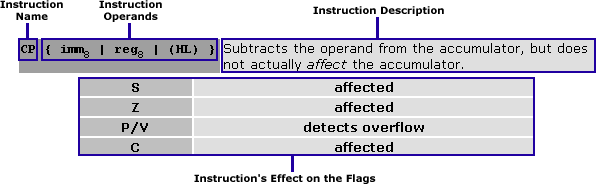
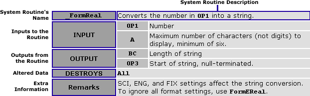

Formatting of This Guide
Headings
At the top of each page you will see four sections separated by horizontal lines. At the very top and tucked all the way to the right are some simple navigation links.
The next section will be the day number and the title in dark blue.
Next is a colorful indication of what skill level you should be at if you are reading this day. Novices are week 1, Intermediates are for week 2, the Advanced get week 3, and Experts can look at week 4 material.
The last strip is a mini table of contents or listing of the major topics covered. Each listing has a bullet next to it, the type of bullet indicating the relative difficulty of that topic (an entirely subjective decision on my part):
- So simple you only need 10,000,000 times the intelligence of the average 14-year-old IM troll to comprehend.
- Some thinking required.
- Cerebral annihilation.
Furthermore, the more difficult a section, the more likely you should be able to skip it, advance to something easier, and then return when you want another go at it.
Bodies
Hyperlinks are blue in a sans-serif font. If the cursor changes to a question mark (maybe), the link is to a popup message box containing purely parenthetical matter.
All assembly language is given in a monospaced font, sometimes it is colored. Fully working programs are on a gray background and titled with Program chapter-X.
.nolist
#include "ti83plus.inc"
#define ProgStart $9D95
.list
.org ProgStart - 2
.DB t2ByteTok,tAsmCmp
b_call(_ClrLCDFull)
ld hl,0
ld (PenCol),hl
ld hl,msg
b_call(_PutS) ; Display the text
b_call(_NewLine)
ret
msg:
.db "Hello world!",0
.end
.end
Details about an assembly instruction are given in a grayscale box:

When the instruction gives operands in the form
{ foo | bar | baz }
then you choose one of the options delimited by the verical bars.
An operand of reg8 represents any 8-bit register except F R I.
An operand of reg16 represents any 16-bit register except AF IX IY (unless otherwise noted).
An operand of regindex represents either IX IY
An operand of imm represents an immediate value or constant.
Details about a ROM call are also given in a grayscale box:

INPUTS are the registers and memory locations that contain routine input parameter.
OUTPUTS are the registers and memory locations that contain routine results.
The DESTROYS line indicates which registers and variables are set to an unknown state. All is shorthand for the registers AF BC DE HL, and maybe IX. I'm not sure. (stupid TI...)
REMARKS are additional, helpful information.
This is part of Learn TI-83 Plus Assembly In 28 Days
Copyright (c) 2002, 2003, 2004 Sean McLaughlin
See the file gfdl.html for copying conditions